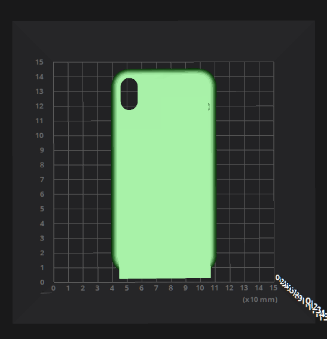
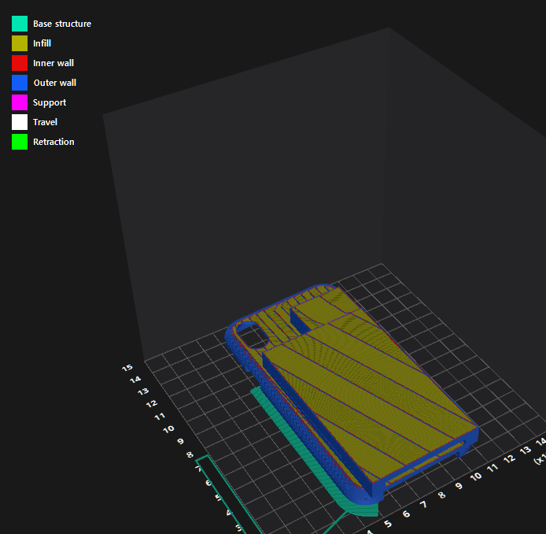
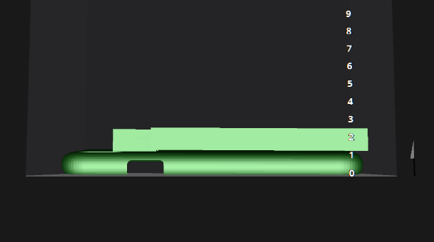
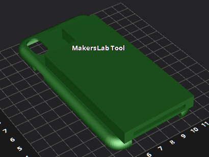

Phonecase Slot Project:

Inside View

This 3D model that I created using Zbrush is a Phone case slot meant to present users losing their band cards, health cards & more!
It also has the multi-functional ability to charge the phone
In summary, the 3D model will help the limit the material used in the process of making this design
Below you will be able 3D Printer settings


 